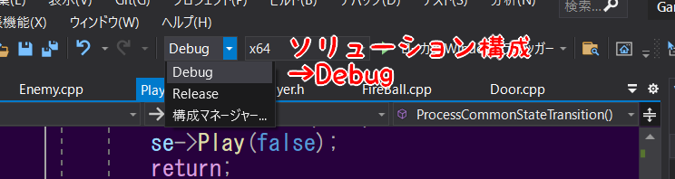
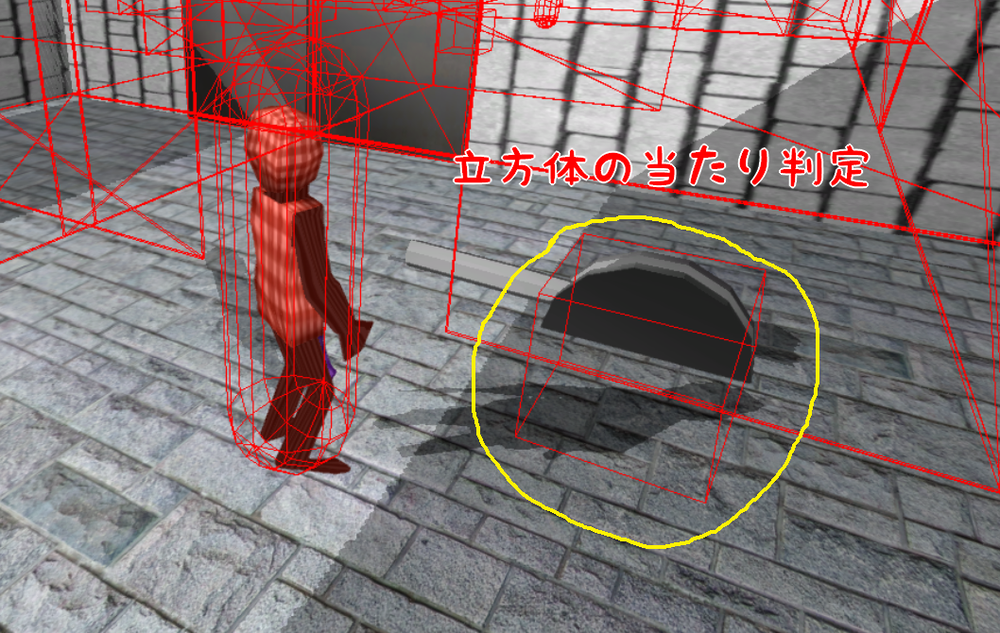

- CollisionObject(当たり判定用クラス)
- bulletphysics
3.1 ステート(状態)
3.2 CollisionObject
3.3 PlayerのCollisionObject
- //Player.cpp
- #include "stdafx.h"
- #include "Player.h"
- #include "Game.h"
- #include "FireBall.h"
- #include "sound/SoundEngine.h"
- #include "sound/SoundSource.h"
- //CollisionObjectを使用するために、ファイルをインクルードする。
- #include "collision/CollisionObject.h"
- //Player.cpp/Player::MakePushLeverCollision()
- void Player::MakePushLeverCollision()
- {
- //コリジョンオブジェクトを作成する。
- CollisionObject* collisionObject = NewGO<CollisionObject>(0);
- Vector3 collisionPosition = m_position;
- //座標をプレイヤーの少し前に設定する。
- collisionPosition += m_forward * 50.0f;
- //球状のコリジョンを作成する。
- collisionObject->CreateSphere(collisionPosition, //座標。
- Quaternion::Identity, //回転。
- 70.0f); //球の大きさ(半径)。
- //名前を付ける。
- collisionObject->SetName("player_lever");
- }
3.4 LeverのCollisionObject
- //Lever.h
- #pragma once
- //クラス宣言。
- class CollisionObject;
- ///<summary>
- ///レバー。
- ///<summary>
- class Lever : public IGameObject
- {
- public:
- ///<summary>
- ///レバーステート。
- ///<summary>
- enum EnLeverState {
- .
- .
- .
- int m_leverNumber = 0; //レバーの番号。
- CollisionObject* m_collisionObject; //コリジョンオブジェクト。
- };
- //Lever.cpp
- #include "stdafx"
- #include "Lever.h"
- #include "Door.h"
- #include "sound/SoundEngine.h"
- #include "sound/SoundSource.h"
- //ファイルをインクルードする。
- #include "collision/CollisionObject.h"
- Lever::Lever()
- {
- }
- Lever::~Lever()
- {
- //コリジョンオブジェクトを削除する。
- DeleteGO(m_collisionObject);
- }
- bool Lever::Start()
- {
- //アニメーションを読み込む。
- m_animationClips[enAnimationClip_Idle].Load("Assets/animData/lever/idle.tka");
- m_animationClips[enAnimationClip_Idle].SetLoopFlag(false);
- .
- .
- .
- //モデルを読み込む。
- m_modelRender.Init("Assets/modelData/lever/lever.tkm");
- m_modelRender.SetPosition(m_position);
- m_modelRender.SetScale(m_scale);
- m_modelRender.SetRotation(m_rotation);
- //コリジョンオブジェクトを作成する。
- m_collisionObject = NewGO<CollisionObject>(0);
- //ボックス状のコリジョンを作成。
- m_collisionObject->CreateBox(m_position, //座標。
- m_rotation, //回転。
- Vector3(70.0f,70.0f,70.0f)); //大きさ。
- //名前を設定する。
- m_collisionObject->SetName("lever");
- //自動で削除を無効にする(DeleteGOで削除する必要がある)。
- m_collisionObject->SetIsEnableAutoDelete(false);
- //音を読み込む。
- g_soundEngine->ResistWaveFileBank(6, "Assets/sound/lever.wav");
- return true;
- }
3.5 CollisionObjectの当たり判定
- //Lever.cpp/Lever::ProcessTransitionPushState()
- void Lever::ProcessTransitionPushState()
- {
- //プレイヤーが作成した、レバー用のコリジョンの配列を取得。
- const auto& collisions = g_collisionObjectManager->FindCollisionObjects("player_lever");
- //for文で配列を回す。
- for(auto collision : collisions)
- {
- //レバー自身のコリジョンとプレイヤーのコリジョンが。
- //衝突していたら。
- if(collision->IsHit(m_collisionObject) == true)
- {
- //押すステートに遷移させる。
- //押すステートに遷移させることにより、レバーの押すアニメーションが再生させる。
- m_leverState = enLeverState_Push;
- //効果音を流す。
- SoundSource* se = NewGO<SoundSource>(0);
- se->Init(6);
- se->Play(false);
- se->SetVolume(0.6f);
- }
- }
- }
- //Lever.cpp/Lever::ProcessTransitionPushIdleState()
- void Lever::ProcessTransitionPushIdleState()
- {
- //押すアニメーションの再生が終了したら。
- if(m_modelRender.IsPlayingAnimation() == true)
- {
- //ドアのオブジェクトの配列を取得する。
- auto doors = FindGOs<Door>("door");
- //for文で配列を回す。
- for(auto door : doors)
- {
- //レバーの番号とドアの番号が一致していれば。
- if(m_leverNumber == door->GetDoorNumber())
- {
- //ドアに開けることを通知する。
- door->NotifyOpen();
- //ステートを「レバーを押して終わった」に変更する。
- m_leverState = enLeverState_Push_Idle;
- break;
- }
- }
- }
- }
- //Lever.cpp/Lever::ProcessTransitionPullState()
- void Lever::ProcessTransitionPullState()
- {
- //プレイヤーが作成した、レバー用のコリジョンの配列を取得。
- const auto& collisions = g_collisionObjectManager->FindCollisionObjects("player_lever");
- //for文で配列を回す。
- for(auto collision : collisions)
- {
- //レバー自身のコリジョンとプレイヤーのコリジョンが。
- //衝突していたら。
- if(collision->IsHit(m_collisionObject) == true)
- {
- //引くステートに遷移させる。
- //引くステートに遷移させることにより、レバーの引くアニメーションが再生させる。
- m_leverState = enLeverState_Pull;
- //効果音を流す。
- SoundSource* se = NewGO<SoundSource>(0);
- se->Init(6);
- se->Play(false);
- se->SetVolume(0.6f);
- }
- }
- }
- //Lever.cpp/Lever::ProcessTransitionPullIdleState()
- void Lever::ProcessTransitionPullIdleState()
- {
- //引くアニメーションの再生が終了したら。
- if(m_modelRender.IsPlayingAnimation() == true)
- {
- //ドアのオブジェクトの配列を取得する。
- auto doors = FindGOs<Door>("door");
- //for文で配列を回す。
- for(auto door : doors)
- {
- //レバーの番号とドアの番号が一致したら。
- if(m_leverNumber == door->GetDoorNumber())
- {
- //ドアに閉めることを通知する。
- door->NotifyClose();
- //レバーを「引き終わった」ステートに遷移させる。
- m_leverState = enLeverState_Pull_Idle;
- break;
- }
- }
- }
- }
3.6 まとめ
- 「CollisionObject」で当たり判定を取ることができる。
3.7 Tips bulletphysics
この章で学ぶこと
早速、プログラミングをしていきたい所ではありますが、その前にステートについて解説します。
このゲームプログラミング２のサンプルゲームでは、各クラスごとにステート(状態)が設定されています。

このゲームプログラミング２のサンプルゲームでは、各クラスごとにステート(状態)が設定されています。
このステートを遷移させることにより、各クラスの動きを制御していきます。このことを年頭に置いておいてください。
実際のゲーム制作でも、bool変数で状態を管理するよりも、enum型などで状態を管理した方が良い場合があります。
実際のゲーム制作でも、bool変数で状態を管理するよりも、enum型などで状態を管理した方が良い場合があります。
k2Engineには、「CollisionObject」という当たり判定をとるようのクラスが用意されています。
「PhysicsStaticObject」は貫通しない当たり判定でしたが、「CollisionObject」は貫通する当たり判定です。
今回はこの「CollisionObject」を使用して、「Lever」を動かすように実装したいと思います。
「PhysicsStaticObject」は貫通しない当たり判定でしたが、「CollisionObject」は貫通する当たり判定です。
今回はこの「CollisionObject」を使用して、「Lever」を動かすように実装したいと思います。
それでは、「Player」がレバーを押すアニメーションをした時に、「CollisionObject」を発生させるようにしてみましょう。
では、Player.cppに下記のコードを追加してください。
この、「MakeLeverCollision関数」は、レバーを押すアニメーションが再生されるときに、呼ばれています。
できたら、Visual Studioのソリューション構成をDebugにして実行してください。

Aボタンを押したときに、「Player」の前に当たり判定が発生されているでしょうか。
では、続いて「Lever」側の「CollisionObject」の発生の実装をしていきます。
「Lever」の「CollisionObject」は、「Lever」が存在している間、常に存在させておきたいので、「CollisionObject」をメンバ変数にします。
Lever.h、Lever.cppそれぞれに下記のコードを追加してください。
「Lever」の「CollisionObject」は、「Lever」が存在している間、常に存在させておきたいので、「CollisionObject」をメンバ変数にします。
Lever.h、Lever.cppそれぞれに下記のコードを追加してください。
できたら、実行してみましょう。「Lever」の周りに当たり判定が発生しているでしょうか。

では、最後に「CollisionObject」同士が衝突した時の処理を追加していきます。まずは、「Door」を開く処理を実装しましょう。
Lever.cppに下記のコードを追加してください。
「CollisionObject」の衝突判定には、「IsHit関数」を使用します。「CollisiionObject」同士が衝突したら、「Lever」のアニメーションを再生するようにしています。
アニメーションの再生が終了したら、「Door」を開けるようにします。
では続いて、「Door」を閉める処理を実装しましょう。Lever.cppに下記のコードを追加してください。
できたら、実行してみてください。「Door」が開閉するようになっているでしょうか。
これで第三章は終了です。
これで第三章は終了です。
今までPysicsStaticObject、CharacterController、CollisionObjectと当たり判定をとるクラスを扱ってきました。
本来であれば、このような当たり判定をとる処理というのは大変複雑なのですが、それを可能にするのが物理エンジンです。
k2Engineでは、「bulletphysics」という物理エンジンを採用しています。これまで使用してきた当たり判定クラスはbulletphysicsの機能を使用して実装されています。
Bullet
Bullet
特に3Dゲームでは、様々な形状のオブジェクトが登場します。それぞれのオブジェクトの衝突判定の実装は容易なことではありません。
ですので、k2Engineでは物理エンジンを採用しています。
また、「bulletphysics」を使用すれば、当たり判定をとるだけでなく、オブジェクトに物理的な挙動をさせることが可能です。
ボールが床や壁に衝突して、跳ね返っているのがわかるでしょうか。このようなボールの移動には、bulletphysicsの機能を利用しています。